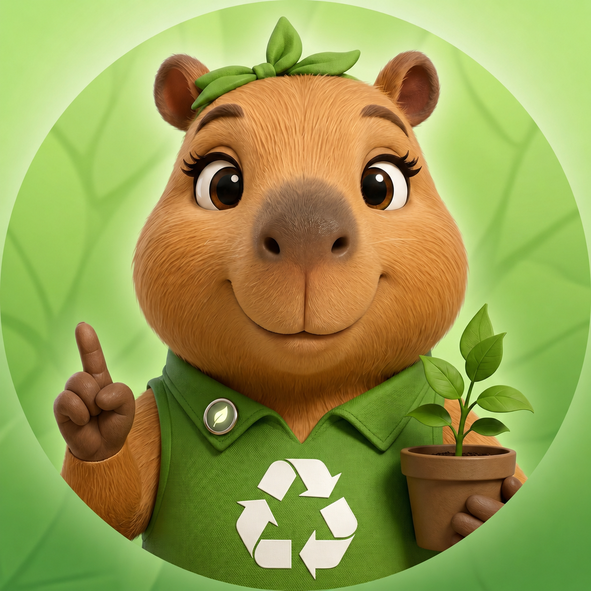

EEva Atende no chat
Environmental · Ambiental
Eva orienta sobre descarte correto, reciclagem, separação de resíduos e cuidado com o meio ambiente. É ela quem conversa diretamente com você no chatbot, com linguagem clara, amigável e sempre prática.